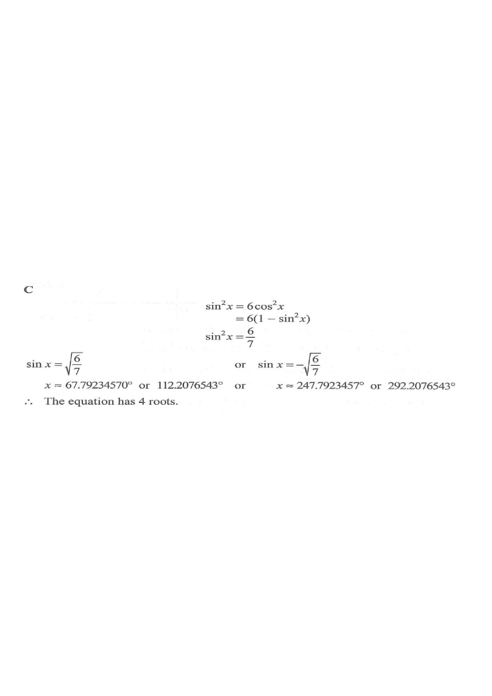

Topic 13 · Trigonometry — number of roots of a trigonometric equation
For $0^\circ \le x < 360^\circ$, how many roots does the equation $$\sin^2 x = 6\cos^2 x$$ have?

Recall the fundamental identity:
$$\sin^2 x + \cos^2 x = 1 \quad\Longrightarrow\quad \cos^2 x = 1 - \sin^2 x$$Substitute this into $\sin^2 x = 6\cos^2 x$ to turn the equation into a single-trig-function equation.
\[ \sin^2 x = 6\cos^2 x = 6(1-\sin^2 x) \] \[ \sin^2 x = 6 - 6\sin^2 x \] \[ 7\sin^2 x = 6 \] \[ \sin^2 x = \frac{6}{7} \]
So $\displaystyle \sin x = \pm\sqrt{\frac{6}{7}} \approx \pm 0.9258$.
For $0^\circ \le x < 360^\circ$, the equation $\sin x = k>0$ has two solutions in the first and second quadrants.
$$x \approx 67.79^\circ \quad \text{or} \quad x \approx 112.21^\circ$$The diagram shows the upper red line and the two green intersection points on the circle.
For $0^\circ \le x < 360^\circ$, the equation $\sin x = k<0$ has two solutions in the third and fourth quadrants.
$$x \approx 247.79^\circ \quad \text{or} \quad x \approx 292.21^\circ$$The diagram shows the lower red line and the other two green intersection points.
Combining the two cases:
$$67.79^\circ,\;112.21^\circ,\;247.79^\circ,\;292.21^\circ$$All four lie in the required interval $0^\circ \le x < 360^\circ$.
Question. For \(0^{\circ}\le x<360^{\circ}\), how many roots does the equation \(\sin^{2}x=4\cos^{2}x\) have? A. \(2\) B. \(3\) C. \(4\) D. \(6\) [1 mark]